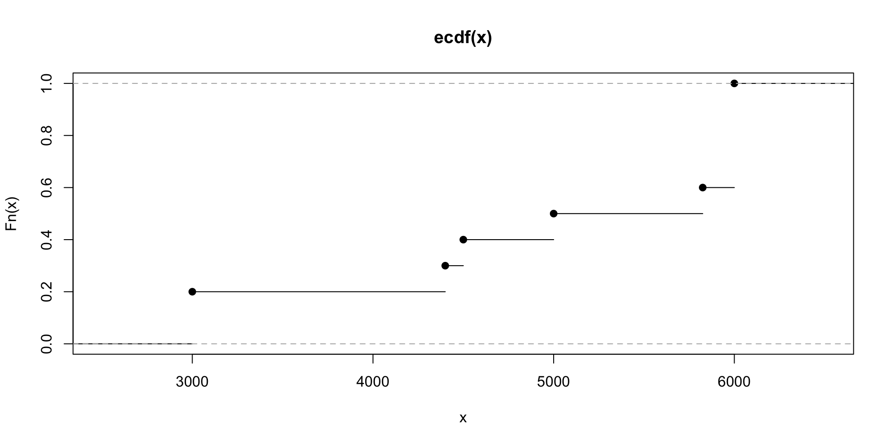

ST201 Data Analysis
Data
Data basics
We will consider a dataset with information for 50 loans
Each row in the dataset represents a single loan
- formally, an observational unit
Each column represents characteristics associated with the loan
- formally, a variable
Variables
Observations or data points can be collected in a statistical variable.
Qualitative Variables
Descriptive or categorical variables that define characteristics.
- 🌎 US State: Identifies geographic locations.
- 🏷️ Loan Grade: Categorizes the quality of loans.
- 🏠 Homeownership: Indicates property ownership status.
Quantitative Variables
Measurable or numerical variables that quantify data.
- 💵 Loan Amount: The total value of the loan.
- 📈 Interest Rate: The cost of borrowing expressed as a percentage.
- 🗓️ Loan Term: The duration for repayment.
- 💰 Total Income: The amount of income earned.
Variables
Variables can be categorized as either discrete or continuous.
Discrete Variables
Distinct and countable variables that represent individual values.
- 📅 Loan Term: The number of periods for repayment.
- 🏷️ Loan Grade: Categories such as 1 = A, 2 = B, 3 = C, 4 = D…
Continuous Variables
Variables that can take an infinite number of values, representing measurable quantities.
- 💵 Loan Amount: The exact value of the loan.
- 📈 Interest Rate: The precise percentage of borrowing cost.
Scales
Understanding the different scales of measurement helps in analyzing data accurately.
Nominal Scale
Values cannot be ordered and represent distinct categories.
- 🌎 US State: Identifies states without any order.
- 🏠 Homeownership: Categories (rent, mortgage), with no inherent ranking.
Ordinal Scale
Values can be ordered and reflect a natural ranking.
- 🎓 Loan Grade: Categories like A, B, C, D, E, which represent a quality spectrum.
Grouped Data
Sometimes, data is available only in summarized form, where you know the category or group rather than the exact value.
- Income Groups: (0 EUR - 20,000 EUR), [20,000 EUR - 30,000 EUR), etc.
- Political Parties: Combines parties with a low number of voters into one category (“other”).
- Insurance Claims: Claims data might be simplified - if a customer has made a claim or not (Yes/No)
- Any grouped variable with only two possible values is called a binary variable.
Creating Data Sets
A data frame is a convenient and common way to organize data, especially if collecting data in a spreadsheet.
The loan data is an example of a data frame.
A data frame where each row is a unique case (observational unit), each column is a variable, and each cell is a single value is commonly referred to as tidy data.
When recording data, use a tidy data frame unless you have a very good reason to use a different structure.
This structure allows new cases to be added as rows or new variables as new columns and facilitates visualization, summarization, and other statistical analyses.
Statistical Software
There are number of statistical software packages which allow data collection, management, and–most importantly–analysis.
We will focus on the statistical software package R.

Data can easily be read into R to be analysed.
Numerical representations of categorical data
Let’s consider the number (frequency) of loans made among renters vs mortgage holders vs those who own their home outright in this dataset
Numerical Representations of Categorical Data
Let’s consider the proportion (relative frequency) of loans made within each homeowner category in this dataset
Graphical representations of categorical data
Let’s consider the number (frequency) of loans made among renters vs mortgage holders vs those who own their home outright in this dataset
Graphical representations of categorical data
Let’s consider the proportion (relative frequency) of loans made within each homeowner category in this dataset
Numerical representations of numerical data
Consider the frequencies of the unique loan amounts in the data:
3000 4400 4500 5000 5825 6000 6400 6500 7000 7500 9000 10000 12000
2 1 1 1 1 4 1 1 1 1 1 2 1
12800 13125 13500 14500 15000 16000 16500 17000 18000 18200 18500 20000 22000
1 1 1 1 3 1 1 1 2 1 1 3 1
24000 25000 29400 30000 32000 35000 38500 40000
2 3 1 2 1 2 1 2 There are 34 unique loan amounts.
Does it make sense to tabulate this type of data?
Graphical representations of numerical data
Graphical representations of numerical data
Graphical representations of numerical data
Empirical Cumulative Distribution Function (ECDF)
Consider the following 10 loan amounts:
[1] 3000 3000 4400 4500 5000 5825 6000 6000 6000 6000An ECDF can be used to obtain the relative frequencies for values contained in certain intervals, e.g., 0 - 3000, 3001 - 5000.
For the 10 loan amounts we can see that
- 20% of the amounts are equal to or below 3000
- 50% are equal to or below 5000
- 100% are equal to or below 6000
ECDF plot of loan amounts (subset of 10)
